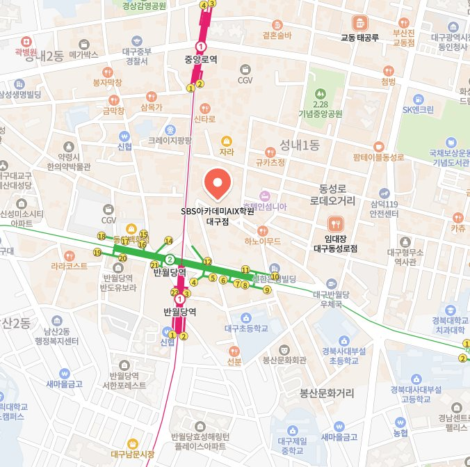

가게 이야기
MELLOW BEAN은 매장 안쪽에서 원두를 직접 볶습니다. 볶은 지 2주가 지난 원두는 쓰지 않습니다.
매주 두 가지 원두를 골라 핸드드립과 라떼로 냅니다.

매일 아침
직접 볶은 원두를
손으로 내립니다.
| 이름 | 산지 | 가공 | 로스팅 | 맛 |
|---|---|---|---|---|
| 예가체프 | 에티오피아 | 워시드 | 11.24 · 약배전 | 자스민, 레몬, 홍차 |
| 우일라 | 콜롬비아 | 워시드 | 11.22 · 중배전 | 밀크초콜릿, 아몬드, 흑설탕 |
핸드드립 한 잔은 아래 수치로 내립니다. 물은 네 번에 나눠 붓고, 처음 30초는 뜸을 들입니다.


MELLOW BEAN은 매장 안쪽에서 원두를 직접 볶습니다. 볶은 지 2주가 지난 원두는 쓰지 않습니다.
매주 두 가지 원두를 골라 핸드드립과 라떼로 냅니다.
